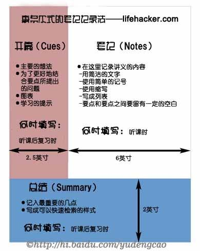

所有笔记记法都有优缺点。当你自己已经熟悉这些种技法时，你会发现自己其实也在做同样的事情。这是因为在不同的演讲和会议上，你会自动地意识到究竟哪一种方法才是记下笔记的最佳途径。
列提纲
在这种技巧中，所记下的内容是有等级顺序的。你开始时写下大意，然后在其之下写下更多更具体的相关内容。按这种方式，你将能列出一个从整体概念到具体知识的知识的清单。而这种技巧的最大不足是很难显示不同概念之间的联系。为了弥补这一点，我们必须用到箭头，而这又使得笔记凌乱不堪。
思路图析
这种方法可使列提纲的方法优势最大化。当不同概念之间的关联需要直观表现时，我们用得到这种思路图析的方法。找出一张白纸，把演讲或讨论会的核心话题放在纸的正中间。然后开始用箭头把分概念与主概念相连。把每一个概念用相互独立的泡泡圈起来，以使概念之间更好分辨。当所有的概念都被连接之后，你应该对这个特定的话题形成一个路线图（这样就是为什么叫“思路图析”的原因）。
康乃尔笔记法
- (1).上课时记笔记：
用大张活页笔记本，在距离左边6公分处划一条垂直线。在线的右边记下上课的重要内容（重要事件、想法、定义等有助了解主题的细节）。对重复出现字或词组，以代号或简写代替。只用笔记纸的其中一面,在另一主题开始前，留下几行空白让自己了解这是另一主题的开始。
- (2).整理：
以下列原则整理笔记：
-
①上完课后尽快将简写代号拼凑完整。
-
②画清楚图表。
-
③在新词语和重要句子旁划记号强调 。
-
④以星号或惊叹号标出重点。
-
⑤订正错字。
直线左边字段为复习栏，将右边上课笔记整理完后在此写下关键词或词、简短标题、重要概念摘要及加上批注。可强化印象及提供复习架构。
- (3).演练：
以手盖住右边笔记，只看左边练习栏内容，问自己问题并进可能大声说出记得的笔记内容，然后拿开手对照答案是否完整，有助将所学传递至长期记忆。
- (4).复习：
多做几次自问自答（每次时间勿太长）。短但多次的复习效果较佳。每节课后花十分钟做简短复习可将上课内容稳稳留在长期记忆内。对于程序性内容必须重做。
教师模拟，自我讲解。

文学作用的笔记方法
摘录式
读书时，把书报上精彩的、有意义的、富有哲理的语句、重要的片断摘抄下来。摘录时要注意，不能全抄，而要把书中的优美词语按人物类、景物类、状物类、警句类等摘抄下来。日积月累，积少成多，积沙成塔，写作文需要时，就可以从“词语仓库”里搬出来，参考使用。
体会式
读书之后，有自己的收获、心得、体会或认识、感想等，再联系自己实际写下来，这叫读书体会或读后感。这种体会式的笔记，应以自己的语言为主，适当地引用原文作例证，表达自己的看法、想法，写出真情实感来。
提纲式
我们读一篇文章，要逐段地把作者隐含的提纲找出来，记下来，弄清楚文章的主要内容和写作思路。编提纲可以采用文中语句和自己语言相结合的方式写，提纲的语言要简洁扼要，具有高度的概括性。提纲式笔记可以帮助我们抓住中心，记住要点，理清思路，加深对文章的理解。
批注式
在阅读自己订阅的报刊和购买的书籍时，为了加深对文章内容的理解，可边读边在书中重要的地方和自己体会最深的地方，写写画画，把书中的重点词句和重要内容用圈、点、画等标记勾划出来，或在空白处写上批语、心得体会、意见，或者是折页、夹纸条作记号等等。这是一种最简易的笔记作法。
书签式
平时读书时，遇到需要背诵的内容，可以记在书签上。把书签夹在课本里、放在口袋里或插在房间专放书签的袋子里，一有空就读一读、念一念、背一背，直到背得滚瓜烂熟，记得牢为止，再把它存放起来。这种书签式的方法，可以帮助我们记忆。如此反复，脑子里积累的东西就会越来越多了。
卡片式
就是用厚纸剪成大小一样的卡片。读书时，可按照写人、记事、写景、状物分门别类地摘记下来，再按书卡分类存放。存放的位置还要按类别，编上号码，写出标题，以便使用时查找。卡片还有携带、使用方便的特点。每天拿出几张卡片读一读，背一背，日积月累，脑子积累的词汇材料就越来越丰富。写作时，就可以从脑子的“储蓄库”里搬出来用，就不愁写不好作文了。做卡片时有四点小的要求：一是每张卡片最好只写一个问题，一个事例。这样既灵活，又不乱，便于分类整理装订成册。二是每张卡片须注明资料来源、书名、篇名、版本、卷首、页码等，便于查找。三是随着学习水平的提高，应注意积累卡片向某些方面集中，使之更加系统化和深化。四是一定要养成定期整理的习惯，按性质或需要把卡片编上页码，分类插放。既为查找使用提供方便，又可在整理过程中使自己平时分散、零碎的知识系统、条理起来。
剪报式
凡是遇到处理的废报、废书，在完全抛弃之前，可以检查一下其中是否有适合留下的文章。不管是一句名言还是一幅图画，都可以剪下在粘贴在自己准备好的剪报本上，空闲时象翻相夹那样随意阅读，也是一种享受呢。
索引式
即写下有关的论文题目或书名等。在阵习中可能经常会碰到这种情况；看到某些东西感到十分有用，但内容却太多，上述三种笔记法又都不易采用．或者是这个内容，你本身就有这本书，所以也不必采用上述方法。但是往往到要用这个内容时，你却忘记了或找不到了。诸如此类问题，只要搞好素引，便可顺手拈来。